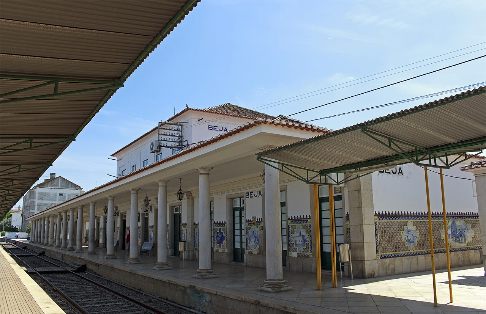
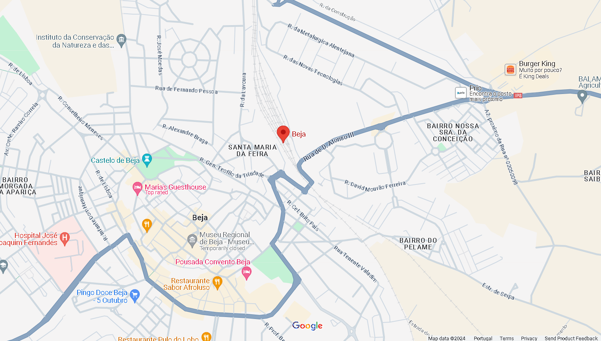
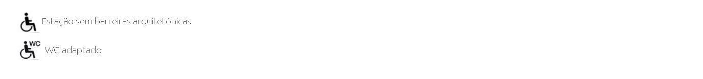

Estação Beja
Localização:
Situa-se no largo da Estação Ferroviária de Beja, 7800 – 132 Beja.
Este é um edifício de 1940, foi construído no estilo tradicional português, tendo a decoração ficado a cargo do artista Jorge Colaço e atualmente realiza apenas 2 ligações Intercidades
-Ligação Beja – Casa Branca (onde se faz o transbordo para quem quer ir para Lisboa);
-Ligação Beja – Évora.

Localização da Estação de Comboios de Beja: https://www.google.com/maps?q=Estação+de+Comboios+de+Beja

Acessibilidade:
É servida por comboios da CP de tipo regional e de longo curso. Esta mesma está equipada com cafetarias, lavabos, sala de espera, bilheteiras, gabinete de informação ao público e uma zona de estacionamento de velocípedes. Para as pessoas com mobilidade reduzida existem WC's adaptados e rampas/elevadores para acesso aos comboios. É uma estação sem barreiras arquitetónicas.

Horários e bilhetes:
Os horários dos comboios podem variar dependendo do destino e da época do ano. É recomendável verificar os horários atualizados dos comboios com antecedência, seja por meio do site oficial da CP, ou nas próprias bilheterias da estação. Os bilhetes podem ser adquiridos na estação, online ou através de máquinas de venda automática disponíveis no local.
É importante observar que as informações acima são gerais e podem estar sujeitas a alterações. Caso precise de informações mais detalhadas, recomenda-se verificar o site oficial da CP ou entrar em contato diretamente com a estação de comboios de Beja para obter informações atualizadas sobre horários, destinos e serviços específicos.
Linha de Atendimento CP: 808 109 110
CP Beja: https://www.cp.pt/passageiros/pt/consultar-horarios/estacoes/beja